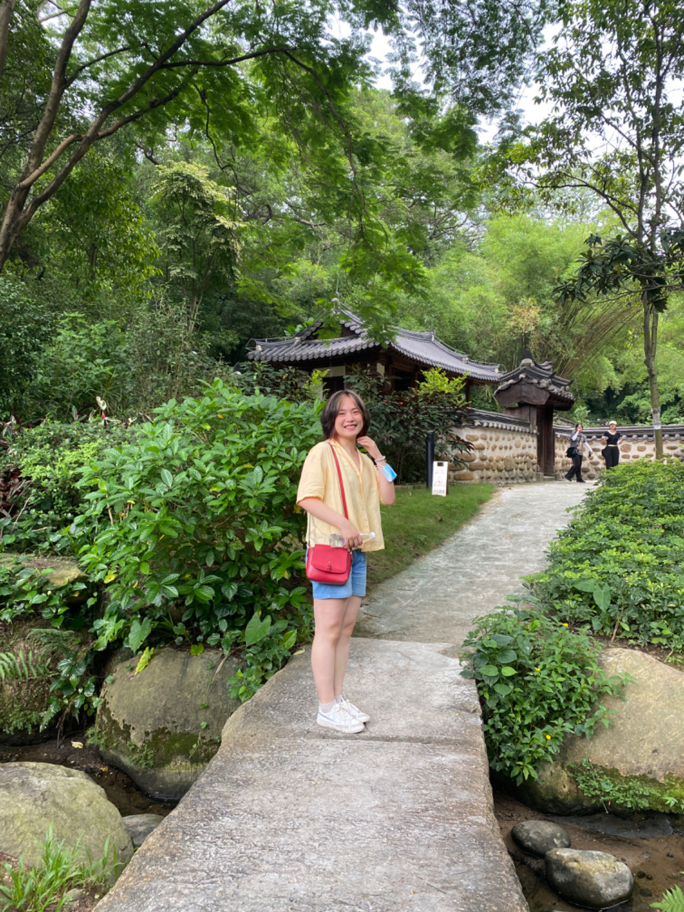
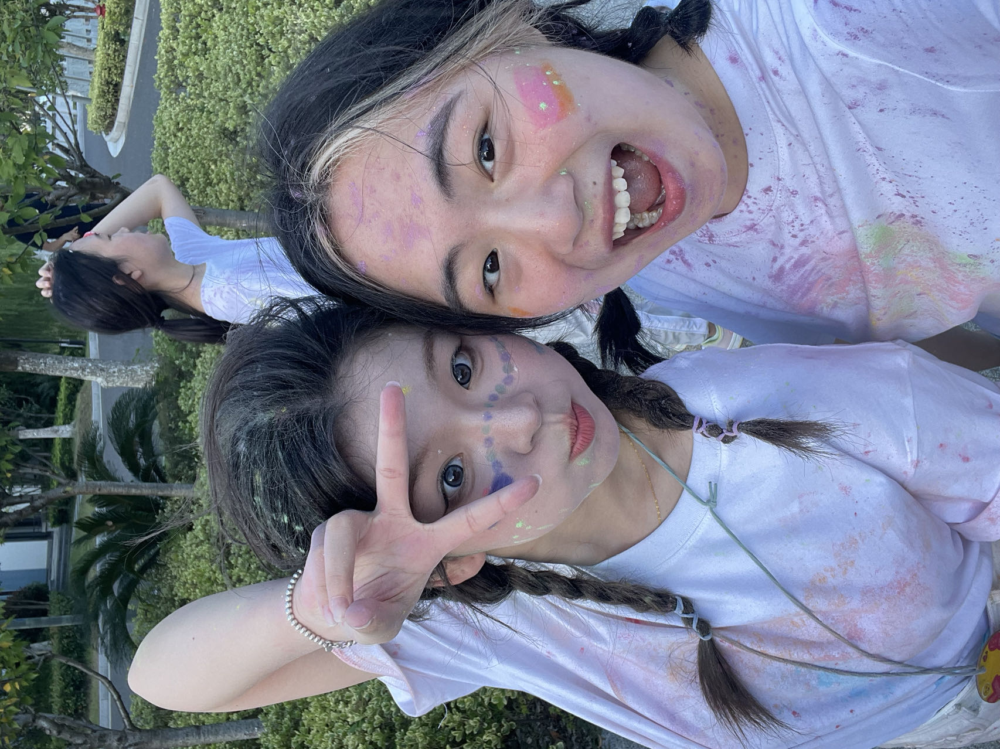

Introduction
 My name is Duorui Fu, you can also call me Dori. I lived in China in my previous 18 years, and lived in Seattle one year ago. I am a sophomore student majoring in sociology and data science. I am interested in interactive design and tech desgin. I'm taking both java and python courses at the same time and I'm getting confused with these different programs sometimes. However, coding for me is a process of being logical and focus, and getting a sense of achievement. I am exicited to learn more about web design and apply my skills to real-world challenges.
Interests
I like hikng and climbing, and playing volleyball. I am also a big fan of k-pop and musical. I enjoy spending time with my family and close friends. I would spend the whole weekend and have a short trip to nearby city with my close friends or just lay in my bed with my splush toys and binge-watch all the day. I'm trying cook and read these days. Cooking for myself is a healing precoess although it is time-consuming. And here are some pics about my favorite albums.